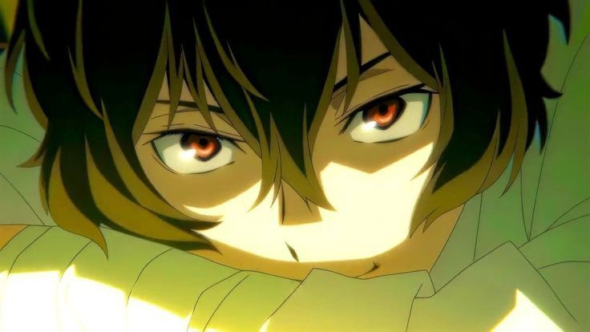

Um pouco mais sobre Osamu Dazai

Osamu Dazai é uma figura complexa e fascinante, tanto na vida real quanto em sua representação no anime Bungo Stray Dogs.
A série, que homenageia escritores japoneses, utiliza a vida e a obra de Dazai como inspiração para criar um personagem
cativante e enigmático.
Dazai na Vida Real:
O Osamu Dazai histórico foi um renomado escritor japonês, conhecido por suas obras que exploravam temas como depressão,
suicídio e a alienação da sociedade. Sua vida pessoal foi marcada por lutas contra o vício em álcool, diversas tentativas
de suicídio e um relacionamento tumultuado com a literatura. A obra de Dazai, como "O Desumanizado" e "No Meio do Caminho",
continua a ser estudada e apreciada até hoje, e ele é considerado um dos maiores escritores japoneses do século XX.
Dazai em Bungo Stray Dogs:
No anime, Dazai é retratado como um detetive da Agência Armada para Detenção de Pessoas com Habilidades Especiais.
Ele é conhecido por sua personalidade peculiar, marcada por um cinismo profundo, um humor negro e uma obsessão
constante com o suicídio. Apesar de sua aparente desilusão com a vida, Dazai é um estrategista brilhante e um combatente
habilidoso, graças à sua habilidade sobrenatural de anular as habilidades dos outros.